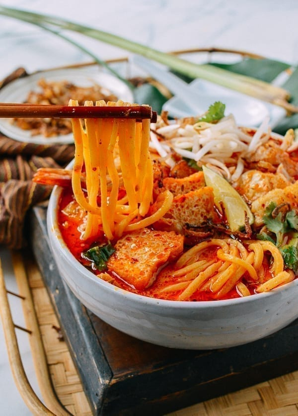

Laksa

THE ULTIMATE SINGAPORE LAKSA RECIPE
Description
Today we’re making Singapore Laksa, thick rice vermicelli noodles topped with a deliciously spicy, thick, coconut-y gravy soup. Laksa is a Peranakan dish, and you can find variations of this amongst the Malay and Chinese in Singapore. Laksa can also be found across Malaysia, Indonesia, and even Thailand. I might be biased, but Singapore has the best laksa for me.
There are actually two versions of laksa. The first has a coconut curry base, which is a lot more prevalent in Singapore and what I’m making today. The other version has an appetisingly sour-y, clearer soup with Asam or tamarind as one of its main ingredients.
Ingredients
Laksa Spice Base Paste
- 100ml of Dried Chilli Paste or 10 Dried Chillies, soaked in boiling water
- 5 Red Chillies, chopped
- 1 medium Onion or 2-3 shallots
- 2-3 Garlic Cloves
- 4 Candlenuts (or use Hazelnuts/Cashew Nuts/Macadamia)
- 20g or 1 tbsp Ginger, chopped
- 20g or 1 tbsp Galangal, chopped
- 1 tsp Turmeric Powder or 20g or 1 tbsp Fresh Turmeric
- 2 Lemongrass Stalks, inner white core
- 20g or 1 tbsp Belachan or Fermented Dried Shrimp Paste
- 30g or 1 tbsp Dried Shrimps
- 1 tbsp Coriander Seeds
Easy Prawn Stock
- 300g Prawn heads and shells
- 1 litre water
Laksa Gravy
- 1 litre Prawn Broth
- 300ml coconut milk
- 2 tbsps Fish Sauce
- 1 tbsp Brown sugar
- Fried Tofu Puffs or Taopok
- Laksa leaves
Noodles bits and bobs:
- Thick Vermicelli / Laksa Rice Noodles / Bee Tai Mak
- 12 Prawns
- Fishcakes, sliced
- Blood Cockles (optional)
- Beansprouts
- Asian green veggies
- Boiled Eggs
Directions
Prawn Stock
- In a pot, add oil and heat. Once hot, add prawn heads and shells. Saute the prawn heads and shells until all the liquid has drawn out and is dry. There should not be a fishy smell.
- Carefully add water to the prawn heads and shells. Stir through, scrape the bottom of the pot and squish heads with spatula to get prawn essence into the stock. Let it come to a boil, before turning down the heat and allow stock to simmer. Cover with a lid and let simmer for 30 minutes to 1 hour.
- At 30 minute to 1 hour mark, prawn stock is done. Strain stock to remove prawn heads and shells and discard. Keep stock for later.
Laksa Spice Base Paste
- To a blender, add all of the ingredients for the laksa paste and finely blend. Add a bit of water to get a better blend if needed.
Laksa Gravy
- To a pot add oil. Once hot, and over low heat, add the blended laksa paste. Saute over low heat continuously until the oil splits, or ‘pecah minyak’, this is when the paste has dried slightly, and the oil has turned red and floating on top of the paste.
- Add coconut milk and stir to incorporate with the paste. Let the coconut milk come to a bubbly boil, then add the prawn stock. Season with fish sauce and brown sugar and stir through.
- Add tofu puffs and laksa leaves if using, and let the laksa gravy come to a boil.
- Once gravy boils, it is done and ready to be served.